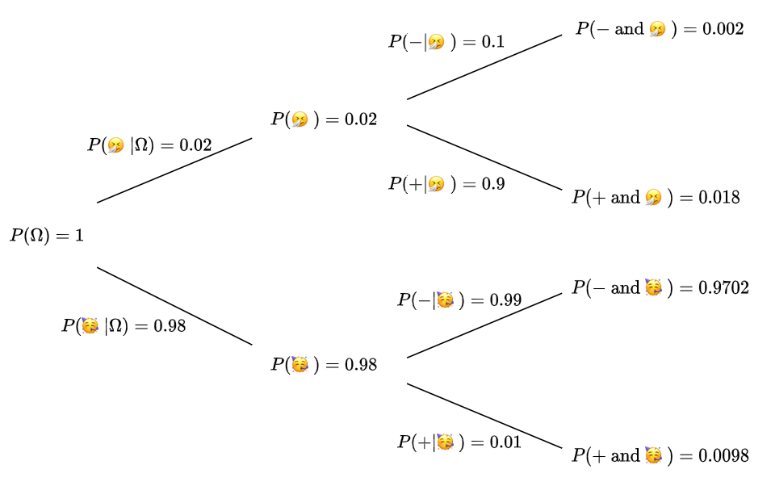

Bayesian Theorem#
If \(E\) and \(F\) are two events, where \(P(F)\neq 0\), the Bayes’ theorem reads as:
Let’s try to discuss how to use/interpret that equation.
Swapping conditionals#
One way to thing of the Bayes’ theorem is how to find the probability after swapping the event and the condition using the original conditional probability and the probabilities of the event and the condition.
To visualize what’s happening, Bayes’ theorem allows us to compute the conditional probability \(P(E|F)\) on the corresponding branch (that connects \(P(F)\) and \(P(EF)\)) of a probability tree, by using the values from a branch from another tree where the initial node is \(P(E)\):
{kind=link}
Example: Medical test#
Assume that there is a disease and 2% of the population has that sickness (I will denote that event by 🤧, and the event that contains healthy people by 🥳).
The developer of a medical test for that disease declares a false negative occurs with probability 10% and a false positive occurs with a probability 1%.
Note that a positive test result means that according to the test result, you are sick.
You take the test, and the result is positive (I will denote the event that contains people with positive result by + and negative result by -, respectively).
Big question: What’s the probability that you have the disease?
Let’s first write down what’s given explicitly:
\(P(🤧)=0.02\)
\(P(\textrm{false negative})=P(-|🤧)=0.1\)
\(P(\textrm{false positive})=P(+|🥳)=0.01\)
Note that there are some probabilities that we can compute in a straighforward way:
\(P(🥳)=0.98\)
\(P(\textrm{true positive})=P(+|🤧)=0.9\)
\(P(\textrm{true negative})=P(-|🥳)=0.99\)
Warning
Note that \(P(+|🤧)+P(-|🤧)=1\) (because the test result of any sick person is either + or -),
but \(P(-|🤧)+P(-|🥳)\neq 1\).
So, we can organize all given probabilities by drawing the following probability tree:
{kind=link}
The probability we’re after, namely \(P(🤧|+)\), lives on another probability tree.
{kind=link}
Hence by Bayes’ theorem: $\( P(🤧|+) = \frac{P(+|🤧)P(🤧)}{P(+)}=\frac{P(+|🤧)P(🤧)}{P(+\textrm{ and }🤧)+P(+\textrm{ and }🥳)}=\frac{0.9\cdot0.02}{0.9\cdot0.02+0.01\cdot0.98}=\frac{0.002}{0.0278}\approx 64.8\%\)$
Remark
When we’re computing \(P(+)\), we used the fact that 🤧 and 🥳 are exclusive (\(🤧🥳=\emptyset\)) and exhaustive (\(🤧\cup🥳=\Omega\)) events. Hence, we were able to write \(P(+)=P(+\textrm{ and }🤧)+P(+\textrm{ and }🥳)\).
Biology of twins#
Twins can be either monozygotic (developed from a single egg) or dizygotic. It is always the case that monozygotic twins are of the same sex, whereas dizygotic twins can be of opposite sex. Denote monozygotic by \(M\) and dizygotic by \(D\), and let \(B\) stand for boy and \(G\) stand for girl, then:
Now, assume that we conduct the following experiment: we sample many twins of the same sex, and discover (by looking for different features) that the probability they are dyzygotic is \(p\).
Our question is: What is the proportion of dizygotic twins in the population?
And solving for \(P(D)\) yields: